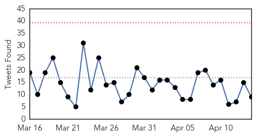
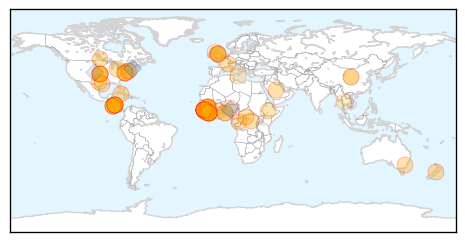
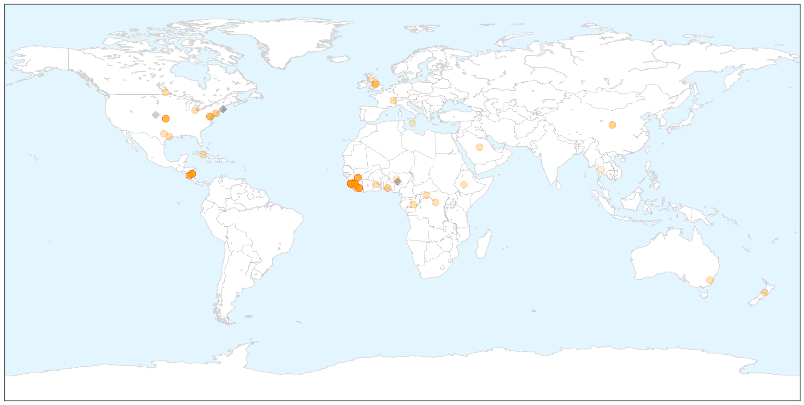

Ebola
30-Day Web Trend
0 alerts, 0 warnings

30-Day Twitter Trend
0 alerts, 0 warnings

Article Locations

X

Article Confidences

Top Articles:
- 1.000
- Testing of Ebola vaccine is underway in Sierra Leone
- 1.000
- Northland DHB doctor returns from midst of Ebola
- 1.000
- Ebola Vaccine Starts Testing in Sierra Leone
- 0.999
- Ebola 'no deadlier than it was 40 years ago'
- 0.998
- Nicaragua quarantines US embassy staffer over Ebola fears -The Tico Times
- 0.998
- Ebola Analysis Finds Virus Hasn’t Become Deadlier, Yet
- 0.998
- Nicaragua quarantines US embassy staffer over Ebola fears
- 0.997
- Take Ebola man, Nicaragua tells US - World News
- 0.997
- U.S. to Help in Launching African CDC -- Occupational Health & Safety
- 0.997
- Third trial underway for Ebola vaccine designed in Winnipeg - Winnipeg
- 0.997
- Ebola Virus Evolving, But Isn't Getting Deadlier, Study Says
- 0.996
- Lessons learned after Ebola
- 0.995
- Cuba Praises Medics Who Tackled Ebola Outbreak in West Africa
- 0.995
- Remove 'Ebola man', Nicaragua tells US
- 0.995
- Pros and cons of Sierra Leone ebola lockdowns
- 0.994
- Liberian boy, 10, has diagnosis of malaria
- 0.994
- 14/04/2015: Ebola outbreak: How will the world respond to the next epidemic?
- 0.993
- Homeland Security News Wire
- 0.993
- Sierra Leone: How Ebola Forces Doctors to Turn Away Pregnant Patients
- 0.989
- CDC: Ebola Vaccine Trial to Begin in Sierra Leone
- 0.989
- Ebola concerns lead Nicaragua to quarantine US embassy worker
- 0.988
- Sierra Leone schools reopen after long closure due to Ebola
- 0.988
- Ebola-hit Sierra Leone goes back to school
- 0.988
- Sierra Leone goes back to school
- 0.988
- Thousands of Sierra Leone schools reopen
- 0.987
- Sierra Leone schools re-open after Ebola closed for 9 months
- 0.986
- Sierra Leone schools reopen after long closure due to Ebola
- 0.986
- US backs plan for African center for disease control
- 0.985
- Sierra Leone schools re-open after Ebola closed for 9 months
- 0.985
- Schools Reopen In Sierra Leone As Ebola Threat Recedes
- 0.984
- Schools reopen in Sierra Leone as Ebola threat recedes
- 0.981
- Ebola: Schools Reopen In Sierra Leone As Threat Declines
- 0.977
- Sierra Leone children finally heading back to school
- 0.976
- No Ebola In Lagos —LASG
- 0.975
- Ebola-hit Sierra Leone goes back to school
- 0.975
- News, Sports, Jobs, Community Information - Parkersburg News and Sentinel
- 0.975
- Hunting Ebola in Freetown: A day in the life of an epidemiologist
- 0.974
- Nicaragua Wants Possibly Infected US Embassy Worker Removed
- 0.974
- US Embassy in Nicaragua denies staffer was in contact with Ebola - Inside Costa Rica
- 0.973
- Ebola-hit Sierra Leone goes back to school (Update)
- 0.968
- Canberra woman cleared of Ebola after return from west Africa
- 0.968
- Sierra Leone schools reopen as Ebola scare subsides
- 0.966
- Is Ebola More Deadly Than It Was 40 Years Ago?
- 0.961
- In Sierra Leone, hopes of saving the school year
- 0.957
- My daughter and I survived Ebola. This is our story.
- 0.955
- Ebola-hit Sierra Leone goes back to school - Major step in the normalisation of life in Sierra Leone - Kuwait Times
- 0.951
- Sierra Leone News : Prince Of Peace Ministry International Donates Anti-Ebola Materials To Vulnerable Children: Sierra Leone News
- 0.950
- Weaknesses Identified in Infectious Disease Prediction Models
- 0.950
- FDA modifies partial clinical hold on TKM-Ebola IND
- 0.946
- S. Leone students back to school after yearlong hiatus
Showing top 50 articles...
Top Tweets:
- 0.916
- Liberia succeeds in fighting Ebola with local sector response - World Health Organization http://t.co/LY8yxXXnTv ebola EVD
- 0.916
- Ebola analysis finds virus hasn't become deadlier yet - Medical Xpress http://t.co/WXD5W9Ks36 ebola EVD
- 0.895
- .@cdc.gov finally starts vaccinating in Ebola vaccine trial in Sierra Leone. Disease incidence there is very low now.
- 0.812
- There is no Ebola in Nigeria. The rumors of Ebola in Nigeria are false.
- 0.764
- Will vaccine bring new hope in fight against Ebola? STRIVE Ebola vaccine trial starts in Sierra Leone. http://t.co/RCwlSMdNEx
- 0.740
- Ebola virus 'no deadlier than it was 40 years ago' say researchers - Medical News Today http://t.co/Lm9LqdFGRP ebola EVD
- 0.737
- Sierra Leone Schools Re-Open After Ebola Closed for 9 Months - ABC News http://t.co/CAzmPlOMnL ebola EVD
- 0.580
- RT: Terrific work: Safety lapses at Sierra Leonean Ebola unit where Partners in Health worker was infected. ht…
- 0.568
- Scottish man tests 'negative' for Ebola - BBC News http://t.co/RfT8RBA0HG ebola EVD